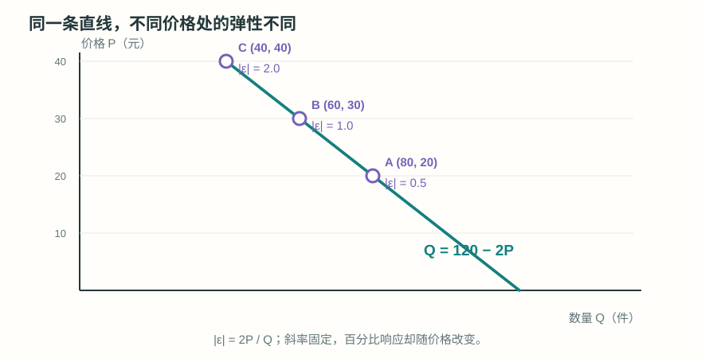
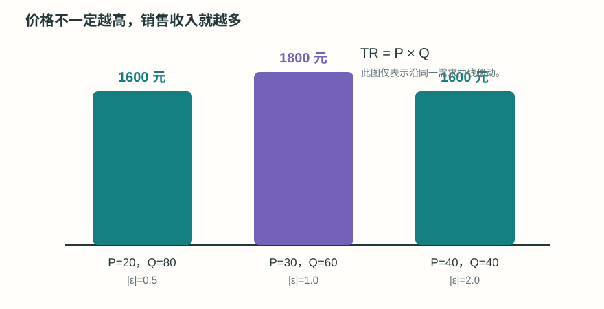

CHAPTER 06 · MICROECONOMICS
弹性：衡量市场反应
为什么同样涨价 10 元，有的市场销量几乎不动，有的却迅速下滑？
弹性：真正需要比较的是百分比反应
一种商品涨价十元，销量下降二十件。变化算大吗？如果原价二十元，涨价一半；原价两百元，涨幅只有百分之五。没有原来的价格和数量，绝对变化难以比较。弹性把两种变量之间的反应写成百分比之比，从而允许研究不同商品或不同市场的敏感程度。
需求价格弹性通常定义为价格变化 1% 时需求数量的相对变化。沿向下倾斜需求曲线，带符号弹性为负；分类时惯用绝对值：小于 1 为缺乏弹性，等于 1 为单位弹性，大于 1 为富有弹性。弹性针对某一点或某个区间，不能不加条件地给商品贴上永久标签。
例如价格、收入和偏好同时变化时，销量前后对比不能直接当成需求的因果价格弹性：需求曲线可能也在移动。
从两次观察计算中点弧弹性
价格从 20 元上涨到 30 元，需求从 80 件减少到 60 件。用最初值作分母会造成方向不对称：从 20 到 30 的涨幅是 50%，反过来从 30 到 20 的跌幅却是 33.3%。中点法使用两端平均值，不会因为计算方向倒转而改变弹性绝对值。
需求变化率 −20/70≈−28.57%，价格变化率 10/25=40%，弧弹性约为 −0.7143。注意这描述的是整个区间的平均百分比反应，不等同于任何端点的点弹性。
| 价格 P（元） | 需求 Q（件） | 区间计算 |
|---|---|---|
| 20 | 80 | 起点 |
| 30 | 60 | 终点 |
| 中点法 | |ε|≈0.7143 | 缺乏弹性 |
一条直线，为什么会有三种弹性？
使用前五章的统一教学市场需求函数 Q=120−2P。它的斜率始终是 dQ/dP=−2，但点弹性绝对值是 2P/Q。价格越高、数量越少，给定同样的价格增量，百分比响应往往越大。这说明斜率固定不意味着弹性固定。

| 价格 | 数量 | 点弹性绝对值 | 分类 |
|---|---|---|---|
| 20 | 80 | 0.5 | 缺乏弹性 |
| 30 | 60 | 1.0 | 单位弹性 |
| 40 | 40 | 2.0 | 富有弹性 |
影响真实弹性的因素包括替代品是否容易获得、消费在预算中的占比、调整需要的时间与产品的必要程度。不能仅凭某商品“很重要”就断言它在每一时期都缺乏弹性。
定价与收入：为什么不是越贵越赚？
卖家的销售总收入为 TR=P×Q。在需求缺乏弹性的局部区间，涨价导致的销售数量百分比下降较小，总收入可能上升；在富有弹性的区间，销量下降的比例大于涨价比例，总收入反而可能减少。

这里 TR 是营业收入而不是利润。将价格固定在 30 元虽然在这条示意需求曲线上收入最大，但生产成本、竞争对手的价格反应、渠道费用等没有进入模型，因此不能据此推断利润最优价格。
| P | Q | TR=P×Q |
|---|---|---|
| 20 | 80 | 1600 |
| 30 | 60 | 1800 |
| 40 | 40 | 1600 |
供给弹性、交叉弹性与收入弹性
同一套百分比反应逻辑可用于供给：供给 Qs=20+3P，在 P=20、Qs=80 时，供给点价格弹性为 3×20/80=0.75。交叉价格弹性比较别的商品价格变化与本商品需求量变化，替代品通常为正、互补品通常为负。收入弹性比较收入变化与商品需求量变化，正值是正常品，负值是劣等品；“劣等”并非质量评价。
丰收悖论的基本逻辑是：农业丰收使供给增加，若需求在相关区间缺乏弹性，价格下跌的百分比可能超过成交数量增加的百分比，农户销售总收入下降。应用到现实还需考虑库存、政府收购、成本、替代品和贸易。
价格实验：实时计算弹性与收入
需求弹性实验室
固定假设 Q=120−2P，只改变商品自身价格，观察数量、点弹性和营业收入。
价格20，需求80，|ε|0.5，TR1600。
默认示意图可独立阅读；实验参数仅用于练习，并非现实数据。
当价格由 30 元升至 40 元时，营业收入如何变化？为什么？
展开答案
价格30时需求60件，收入1800元；价格40时需求40件，收入1600元。因为后段需求更富有弹性，数量的相对下降超过价格的相对上升，导致收入下降。
下一章把消费者与企业对价格变化的敏感程度，应用到税收归宿与价格管制。
资料来源与模型范围
本章数字、图表及互动模型均为教学假设，并非现实市场统计；数学与概念对照以下开放教材：